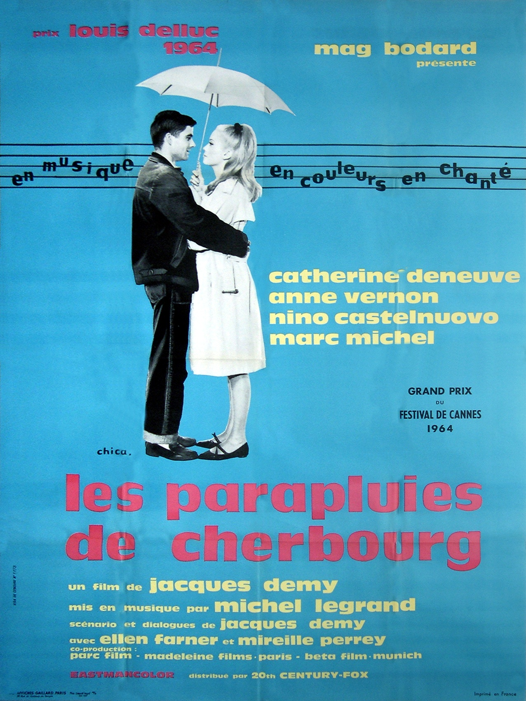

-French Films-
Romance:
L'Histoire d'Adele H."The Story of Adele H"
Classic: Yes Famous/Renowned: Yes
Year: 1975
Starring: Isabelle Adjani
Director: François Truffaut.
Plot:
Based on Victor Hugo's daughter, detailing her unrequited
love for Lieutenant Pinson, eventually pushing her to madness.
Dialogue = Easy
Vocab = Wide Range
Phrases = Little
Amélie
Classic: No
Famous/Renowned: Yes (Very)
Year: 2001
Starring: Audrey Tautou
Director: Jean-Pierre Jeuneut.
Plot: A cheeky, odd and eccentric
film, right down to the hair and lighting,
her naivety and sense of justice ends up in a strange way!
Dialogue = Medium-Easy
Vocab = Medium
Phrases = Wide Range
Les Parapluies de Cherbourg "The Umbrellas of Cherbourg"
Classic: Yes
Famous/Renowned: Yes (somewhat)
Year: 1964
Starring: Catherine Deneuve & Nino Castelnuovo
Director: Jean-Pierre Jeuneut.
Plot: The two young lovers are separated for several years
due to the main male in a war. Female lead's mother
wants to get her married,
trying to make decision to wait for him or not.
Sad, tear-jerking (musical)
Dialogue = Hard (Bit more)
Vocab = Medium-Hard
Phrases = Varied

Jules & Jim
Classic: Yes
Famous/Renowned: Yes
Year: 1962
Starring: Henri Serre, Oskar Werner, & Jeanne Moreau
Director: François Truffaut.
Plot: Jules and Jim are both friends who fall in love with
the same free-spirited, Bohemian, Catherine. Triangle love.
Excellent soundtrack (named by Time in top 10), Dr. S.Hawking's fav
Dialogue = Hard (Bit more)
Vocab = Hard
Phrases = Varied (philosophical)
Les Émotifs anonymes "Romantic Anonymous"
Classic: No
Famous/Renowned: Yes (ish)
Year: 2010
Starring: Isabelle Carré & Benoît Poelvoorde
Director: Jean-Pierre Améris.
Plot: Two people meant for each other, but both with
crippling anxiety, and both with a passion for chocolate.
Adorable, sweet and quirky
Dialogue = Easy (quite)
Vocab = Medium-Easy
Phrases = Simple
Comedy;
Horror: 5 Films
Action: 5 Films
Fantasy: 5 Films
Thriller/Mystery: 5 Film
History/Documentary: 5 Films
Artistic/Philosophy: 5 Films